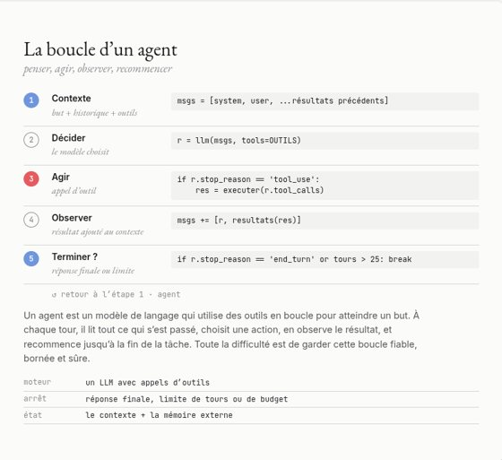

N° 169 pages
Les agents d’IA
des modèles qui agissent Architecture, raisonnement et planification, outils, exécution, mémoire, état, orchestration
N° 179 pages
Les systèmes agentiques
plusieurs agents, des humains, de la fiabilité Mono-agent et multi-agents, humain dans la boucle, réflexion, boucles plan-exécution, fiabilité, évaluation, sécurité